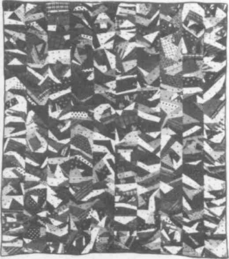
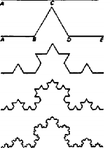
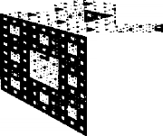

Smooth space and striated space — nomad space and sedentary space — the space in which the war machine develops and the space instituted by the State apparatus — are not of the same nature. No sooner do we note a simple opposition between the two kinds of space than we must indicate a much more complex difference by virtue of which the successive terms of the oppositions fail to coincide entirely. And no sooner have we done that than we must remind ourselves that the two spaces in fact exist only in mixture: smooth space is constantly being translated, transversed into a striated space; striated space is constantly being reversed, returned to a smooth space. In the first case, one organizes even the desert; in the second,
474 the desert gains and grows; and the two can happen simultaneously. But the de facto mixes do not preclude a de jure, or abstract, distinction between the two spaces. That there is such a distinction is what accounts for the fact that the two spaces do not communicate with each other in the same way: it is the de jure distinction that determines the forms assumed by a given de facto mix and the direction or meaning of the mix (is a smooth space captured, enveloped by a striated space, or does a striated space dissolve into a smooth space, allow a smooth space to develop?). This raises a number of simultaneous questions: the simple oppositions between the two spaces; the complex differences; the de facto mixes, and the passages from one to another; the principles of the mixture, which are not at all symmetrical, sometimes causing a passage from the smooth to the striated, sometimes from the striated to the smooth, according to entirely different movements. We must therefore envision a certain number of models, which would be like various aspects of the two spaces and the relations between them.
The Technological Model. A fabric presents in principle a certain number of characteristics that permit us to define it as a striated space. First, it is constituted by two kinds of parallel elements; in the simplest case, there are vertical and horizontal elements, and the two intertwine, intersect perpendicularly. Second, the two kinds of elements have different functions; one is fixed, the other mobile, passing above and beneath the fixed. Leroi-Gourhan has analyzed this particular figure of “supple solids” in basketry and weaving: stake and thread, warp and woof.’ Third, a striated space of this kind is necessarily delimited, closed on at least one side: the fabric can be infinite in length but not in width, which is determined by the frame of the warp; the necessity of a back and forth motion implies a closed space (circular or cylindrical figures are themselves closed). Finally, a space of this kind seems necessarily to have a top and a bottom; even when the warp yarn and woof yarn are exactly the same in nature, number, and density, weaving reconstitutes a bottom by placing the knots on one side. Was it not these characteristics that enabled Plato to use the model of weaving as the paradigm for “royal science,” in other words, the art of governing people or operating the State apparatus?
Felt is a supple solid product that proceeds altogether differently, as an anti-fabric. It implies no separation of threads, no intertwining, only an entanglement of fibers obtained by fulling (for example, by rolling the block of fibers back and forth). What becomes entangled are the microscales of the fibers. An aggregate of intrication of this kind is in no way homogeneous: it is nevertheless smooth, and contrasts point by point with the space of fabric (it is in principle infinite, open, and unlimited in every direction; it has neither top nor bottom nor center; it does not assign fixed and mobile elements but rather distributes a continuous variation). Even the technologists who express grave doubts about the nomads’ powers of innovation at least give them credit for felt: a splendid insulator, an ingenious invention, the raw material for tents, clothes, and armor among the Turco-Mongols. Of course, the nomads of Africa and the Maghreb instead treat wool as a fabric. Although it might entail displacing the opposition, do we not detect two very different conceptions or even practices of weaving, the distinction between which would be something like the distinction between fabric as a whole and felt? For among sedentaries, clothes-fabric and tapestry-fabric tend to annex the body and exterior space, respectively, to the immobile house: fabric integrates the body and the outside into a closed space. On the other hand, the weaving of the nomad indexes clothing and the house itself to the space of the outside, to the open smooth space in which the body moves.
There are many interfacings, mixes between felt and fabric. Can we not displace the opposition yet again? In knitting, for example, the needles produce a striated space; one of them plays the role of the warp, the other of the woof, but by turns. Crochet, on the other hand, draws an open space in all directions, a space that is prolongable in all directions — but still has a center. A more significant distinction would be between embroidery, with its central theme or motif, and patchwork, with its piece-by-piece construction, its infinite, successive additions of fabric. Of course, embroidery’s variables and constants, fixed and mobile elements, may be of extraordinary complexity. Patchwork, for its part, may display equivalents to themes, symmetries, and resonance that approximate it to embroidery. But the fact remains that its space is not at all constituted in the same way: there is no center; its basic motif (“block”) is composed of a single element; the recurrence of this element frees uniquely rhythmic values distinct from the harmonies of embroidery (in particular, in “crazy” patchwork, which fits together pieces of varying size, shape, and color, and plays on the texture of the fabrics). “She had been working on it for fifteen years, carrying about with her a shapeless bag of dingy, threadbare brocade containing odds and ends of colored fabric in all possible shapes. She could never bring herself to trim them to any pattern; so she shifted and fitted and mused and fitted and shifted them like pieces of a patient puzzle-picture, trying to fit them to a pattern or create a pattern out of them without using her scissors, smoothing her colored scraps with flaccid, putty-colored fingers.”2 An amorphous collection of juxtaposed pieces that can be joined together in an infinite number of ways: we see that patchwork is literally a Riemannian space, or vice versa. That is why very special work groups were formed for patchwork fabrication (the importance of the quilting bee in America, and its role from the standpoint of a women’s collectivity). The smooth space of patchwork is adequate to demonstrate that “smooth” does not mean homogeneous, quite the contrary: it is an amorphous, nonformal space prefiguring op art.
The story of the quilt is particularly interesting in this connection. A quilt comprises two layers of fabric stitched together, often with a filler in between. Thus it is possible for there to be no top or bottom. If we follow the history of the quilt over a short migration sequence (the settlers who left Europe for the New World), we see that there is a shift from a formula dominated by embroidery (so-called “plain” quilts) to a patchwork formula (“applique quilts,” and above all “pieced quilts”). The first settlers of the seventeenth century brought with them plain quilts, embroidered and striated spaces of extreme beauty. But toward the end of the century patchwork technique was developed more and more, at first due to the scarcity of textiles (leftover fabric, pieces salvaged from used clothes, remnants taken from the “scrap bag”), and later due to the popularity of Indian chintz. It is as though a smooth space emanated, sprang from a striated space, but not without a correlation between the two, a recapitulation of one in the other, a furtherance of one through the other. Yet the complex difference persists. Patchwork, in conformity with migration, whose degree of affinity with nomadism it shares, is not only named after trajectories, but “represents” trajectories, becomes inseparable from speed or movement in an open space.3
The Musical Model. Pierre Boulez was the first to develop a set of simple oppositions and complex differences, as well as reciprocal nonsymmetrical correlations, between smooth and striated space. He created these concepts and words in the field of music, defining them on several levels precisely in order to account for the abstract distinction at the same time as the concrete mixes. In the simplest terms, Boulez says that in a smooth space-time one occupies without counting, whereas in a striated space-time one counts in order to occupy. He makes palpable or perceptible the difference between nonmetric and metric multiplicities, directional and dimensional spaces. He renders them sonorous or musical. Undoubtedly, his personal work is composed of these relations, created or recreated musically.4
At a second level, it can be said that space is susceptible to two kinds of breaks: one is defined by a standard, whereas the other is irregular and undetermined, and can be made wherever one wishes to place it. At yet another level, it can be said that frequencies can be distributed either in the intervals between breaks, or statistically without breaks. In the first case, the principle behind the distribution of breaks and intervals is called a “module”; it may be constant and fixed (a straight striated space), or regularly or irregularly variable (curved striated spaces, termed focalized if the variation of the module is regular, nonfocalized if it is irregular). When there is no module, the distribution of frequencies is without break: it is “statistical,” however small the segment of space may be; it still has two aspects, however, depending on whether the distribution is equal (nondirected smooth space), or more or less rare or dense (directed smooth space). Can we say that in the kind of smooth space that is without break or module there is no interval? Or, on the contrary, has everything become interval, intermezzo? The smooth is a nomos, whereas the striated always has a logos, the octave, for example. Boulez is concerned with the communication between the two kinds of space, their alternations and superpositions: how “a strongly directed smooth space tends to meld with a striated space,” how “a striated space in which the statistical distribution of the pitches used is in fact equal tends to meld with a smooth space”;5 how the octave can be replaced by “non-octave-forming scales” that reproduce themselves through a principle of spiraling; how “texture” can be crafted in such a way as to lose fixed and homogeneous values, becoming a support for slips in tempo, displacements of intervals, and son art transformations comparable to the transformations of op art.
Returning to the simple opposition, the striated is that which intertwines fixed and variable elements, produces an order and succession of distinct forms, and organizes horizontal melodic lines and vertical harmonic planes. The smooth is the continuous variation, continuous development of form; it is the fusion of harmony and melody in favor of the production of properly rythmic values, the pure act of the drawing of a diagonal across the vertical and the horizontal.
The Maritime Model. Of course, there are points, lines, and surfaces in striated space as well as in smooth space (there are also volumes, but we will leave this question aside for the time being). In striated space, lines or trajectories tend to be subordinated to points: one goes from one point to another. In the smooth, it is the opposite: the points are subordinated to the trajectory. This was already the case among the nomads for the clothes-tent-space vector of the outside. The dwelling is subordinated to the journey; inside space conforms to outside space: tent, igloo, boat. There are stops and trajectories in both the smooth and the striated. But in smooth space, the stop follows from the trajectory; once again, the interval takes all, the interval is substance (forming the basis for rhythmic values).6
In smooth space, the line is therefore a vector, a direction and not a dimension or metric determination. It is a space constructed by local operations involving changes in direction. These changes in direction may be due to the nature of the journey itself, as with the nomads of the archipelagoes (a case of “directed” smooth space); but it is more likely to be due to the variability of the goal or point to be attained, as with the nomads of the desert who head toward local, temporary vegetation (a “nondirected” smooth space). Directed or not, and especially in the latter case, smooth space is directional rather than dimensional or metric. Smooth space is filled by events or haecceities, far more than by formed and perceived things. It is a space of affects, more than one of properties. It is haptic rather than optical perception. Whereas in the striated forms organize a matter, in the smooth materials signal forces and serve as symptoms for them. It is an intensive rather than extensive space, one of distances, not of measures and properties. Intense Spatium instead of Extensio. A Body without Organs instead of an organism and organization. Perception in it is based on symptoms and evaluations rather than measures and properties. That is why smooth space is occupied by intensities, wind and noise, forces, and sonorous and tactile qualities, as in the desert, steppe, or ice.7 The creaking of ice and the song of the sands. Striated space, on the contrary, is canopied by the sky as measure and by the measurable visual qualities deriving from it.
This is where the very special problem of the sea enters in. For the sea is a smooth space par excellence, and yet was the first to encounter the demands of increasingly strict striation. The problem did not arise in proximity to land. On the contrary, the striation of the sea was a result of navigation on the open water. Maritime space was striated as a function of two astronomical and geographical gains: bearings, obtained by a set of calculations based on exact observation of the stars and the sun; and the map, which intertwines meridians and parallels, longitudes and latitudes, plotting regions known and unknown onto a grid (like a Mendeleyev table). Must we accept the Portuguese argument and assign 1440 as the turning point that marked the first decisive striation, and set the stage for the great discoveries? Rather, we will follow Pierre Chaunu when he speaks of an extended confrontation at sea between the smooth and the striated during the course of which the striated progressively took hold.8 For before longitude lines had been plotted, a very late development, there existed a complex and empirical nomadic system of navigation based on the wind and noise, the colors and sounds of the seas; then came a directional, preastronomical or already astronomical, system of navigation employing only latitude, in which there was no possibility of “taking one’s bearings,” and which had only portolanos lacking “translatable generalization” instead of true maps; finally, improvements upon this primitive astronomical navigation were made under the very special conditions of the latitudes of the Indian Ocean, then of the elliptical circuits of the Atlantic (straight and curved spaces).9 It is as if the sea were not only the archetype of all smooth spaces but the first to undergo a gradual striation gridding it in one place, then another, on this side and that. The commercial cities participated in this striation, and were often innovators; but only the States were capable of carrying it to completion, of raising it to the global level of a “politics of science.”10 A dimensionality that subordinated directionality, or superimposed itself upon it, became increasingly entrenched.
This is undoubtedly why the sea, the archetype of smooth space, was also the archetype of all striations of smooth space: the striation of the desert, the air, the stratosphere (prompting Virilio to speak of a “vertical coastline,” as a change in direction). It was at sea that smooth space was first subjugated and a model found for the laying-out and imposition of striated space, a model later put to use elsewhere. This does not contradict Virilio’s other hypothesis: in the aftermath of striation, the sea reimparts a kind of smooth space, occupied first by the “fleet in being,” then by the perpetual motion of the strategic submarine, which outflanks all gridding and invents a neonomadism in the service of a war machine still more disturbing than the States, which reconstitute it at the limit of their striations. The sea, then the air and the stratosphere, become smooth spaces again, but, in the strangest of reversals, it is for the purpose of controlling striated space more completely.11 The smooth always possesses a greater power of deterritorialization than the striated. When examining the new professions, or new classes even, how can one fail to mention the military technicians who stare into screens night and day and live for long stretches in strategic submarines (in the future it will be on satellites), and the apocalyptic eyes and ears they have fashioned for themselves, which can barely distinguish any more between a natural phenomenon, a swarm of locusts, and an “enemy” attack originating at any given point? All of this serves as a reminder that the smooth itself can be drawn and occupied by diabolical powers of organization; value judgments aside, this demonstrates above all that there exist two nonsymmetrical movements, one of which striates the smooth, and one of which reimparts smooth space on the basis of the striated. (Do not new smooth spaces, or holey spaces, arise as parries even in relation to the smooth space of a worldwide organization? Virilio invokes the beginnings of subterranean habitation in the “mineral layer,” which can take on very diverse values.)
Let us return to the simple opposition between the smooth and the striated since we are not yet at the point where we can consider the dissymmetrical and concrete mixes. The smooth and the striated are distinguished first of all by an inverse relation between the point and the line (in the case of the striated, the line is between two points, while in the smooth, the point is between two lines); and second, by the nature of the line (smooth-directional, open intervals; dimensional-striated, closed intervals). Finally, there is a third difference, concerning the surface or space. In striated space, one closes off a surface and “allocates” it according to determinate intervals, assigned breaks; in the smooth, one “distributes” oneself in an open space, according to frequencies and in the course of one’s crossings (logos and nomos).I2 As simple as this opposition is, it is not easy to place it. We cannot content ourselves with establishing an immediate opposition between the smooth ground of the nomadic animal raiser and the striated land of the sedentary cultivator. It is evident that the peasant, even the sedentary peasant, participates fully in the space of the wind, the space of tactile and sonorous qualities. When the ancient Greeks speak of the open space of the nomos — nondelimited, unpartitioned; the pre-urban countryside; mountainside, plateau, steppe — they oppose it not to cultivation, which may actually be part of it, but to the polis, the city, the town. When Ibn Khaldun speaks oibadiya, bedouinism, the term covers cultivators as well as nomadic animal raisers: he contrasts it to hadara, or “city life.” This clarification is certainly important, but it does not change much. For from the most ancient of times, from Neolithic and even Paleolithic times, it is the town that invents agriculture: it is through the actions of the town that the farmers and their striated space are superposed upon the cultivators operating in a still smooth space (the transhumant cultivator, half-sedentary or already completely sedentary). So on this level we reencounter the simple opposition we began by challenging, between farmers and nomads, striated land and smooth ground: but only after a detour through the town as a force of striation. Now not only the sea, desert, steppe, and air are the sites of a contest between the smooth and the striated, but the earth itself, depending on whether there is cultivation in nomos-space or agriculture in city-space. Must we not say the same of the city itself? In contrast to the sea, the city is the striated space par excellence; the sea is a smooth space fundamentally open to striation, and the city is the force of striation that reimparts smooth space, puts it back into operation everywhere, on earth and in the other elements, outside but also inside itself. The smooth spaces arising from the city are not only those of worldwide organization, but also of a counterattack combining the smooth and the holey and turning back against the town: sprawling, temporary, shifting shantytowns of nomads and cave dwellers, scrap metal and fabric, patchwork, to which the striations of money, work, or housing are no longer even relevant. An explosive misery secreted by the city, and corresponding to Thorn’s mathematical formula: “retroactive smoothing.”13 Condensed force, the potential for counterattack?
In each instance, then, the simple opposition “smooth-striated” gives rise to far more difficult complications, alternations, and superpositions. But these complications basically confirm the distinction, precisely because they bring dissymmetrical movements into play. For now, it suffices to say that there are two kinds of voyage, distinguished by the respective role of the point, line, and space. Goethe travel and Kleist travel? French travel and English (or American) travel? Tree travel and rhizome travel? But nothing completely coincides, and everything intermingles, or crosses over. This is because the differences are not objective: it is possible to live striated on the deserts, steppes, or seas; it is possible to live smooth even in the cities, to be an urban nomad (for example, a stroll taken by Henry Miller in Clichy or Brooklyn is a nomadic transit in smooth space; he makes the city disgorge a patchwork, differentials of speed, delays and accelerations, changes in orientation, continuous variations … The beatniks owe much to Miller, but they changed direction again, they put the space outside the cities to new use). Fitzgerald said it long ago: it is not a question of taking off for the South Seas, that is not what determines a voyage. There are not only strange voyages in the city but voyages in place: we are not thinking of drug users, whose experience is too ambiguous, but of true nomads. We can say of the nomads, following Toynbee’s suggestion: they do not move. They are nomads by dint of not moving, not migrating, of holding a smooth space that they refuse to leave, that they leave only in order to conquer and die. Voyage in place: that is the name of all intensities, even if they also develop in extension. To think is to voyage; earlier we tried to establish a theo-noological model of smooth and striated spaces. In short, what distinguishes the two kinds of voyages is neither a measurable quantity of movement, nor something that would be only in the mind, but the mode of spatialization, the manner of being in space, of being for space. Voyage smoothly or in striation, and think the same way… But there are always passages from one to the other, transformations of one within the other, reversals. In his film, Kings of the Road, Wenders intersects and superposes the paths of two characters; one of them takes a still educational, memorial, cultural, Goethean journey that is thoroughly striated, whereas the other has already conquered smooth space, and only experiments, induces amnesia in the German “desert.” But oddly enough, it is the former who opens space for himself and performs a kind of retroactive smoothing, whereas striae reform around the latter, closing his space again. Voyaging smoothly is a becoming, and a difficult, uncertain becoming at that. It is not a question of returning to preastronomical navigation, nor to the ancient nomads. The confrontation between the smooth and the striated, the passages, alternations and superpositions, are under way today, running in the most varied directions.
The Mathematical Model. It was a decisive event when the mathematician Riemann uprooted the multiple from its predicate state and made it a noun, “multiplicity.” It marked the end of dialectics and the beginning of a typology and topology of multiplicities. Each multiplicity was defined by n determinations; sometimes the determinations were independent of the situation, and sometimes they depended upon it. For example, the magnitude of a vertical line between two points can be compared to the magnitude of a horizontal line between two other points: it is clear that the multiplicity in this case is metric, that it allows itself to be striated, and that its determinations are magnitudes. On the other hand, two sounds of equal pitch and different intensity cannot be compared to two sounds of equal intensity and different pitch; in this case, two determinations can be compared only “if one is a part of the other and if we restrict ourselves to the judgment that the latter is smaller than the former, without being able to say by how much.”14 Multiplicities of this second kind are not metric and allow themselves to be striated and measured only by indirect means, which they always resist. They are anexact yet rigorous. Meinong and Russell opposed the notion of distance to that of magnitude.15 Distances are not, strictly speaking, indivisible: they can be divided precisely in cases where the situation of one determination makes it part of another. But unlike magnitudes, they cannot divide without changing in nature each time. An intensity, for example, is not composed of addable and displace-able magnitudes: a temperature is not the sum of two smaller temperatures, a speed is not the sum of two smaller speeds. Since each intensity is itself a difference, it divides according to an order in which each term of the division differs in nature from the others. Distance is therefore a set of ordered differences, in other words, differences that are enveloped in one another in such a way that it is possible to judge which is larger or smaller, but not their exact magnitudes. For example, one can divide movement into the gallop, trot, and walk, but in such a way that what is divided changes in nature at each moment of the division, without any one of these moments entering into the composition of any other. Therefore these multiplicities of “distance” are inseparable from a process of continuous variation, whereas multiplicities of “magnitude” distribute constants and variables.
That is why we consider Bergson to be of major importance (much more so than Husserl, or even Meinong or Russell) in the development of the theory of multiplicities. Beginning in Time and Free Will, he presents duration as a type of multiplicity opposed to metric multiplicity or the multiplicity of magnitude. Duration is in no way indivisible, but is that which cannot be divided without changing in nature at each division (Achilles’ running is not divided into steps, his steps do not compose it in the manner of magnitudes).16 On the other hand, in a multiplicity such as homogeneous extension, the division can be carried as far as one likes without changing anything in the constant object; or the magnitudes can vary with no other result than an increase or a decrease in the amount of space they striate. Bergson thus brought to light “two very different kinds of multiplicity,” one qualitative and fusional, continuous, the other numerical and homogeneous, discrete. It will be noted that matter goes back and forth between the two; sometimes it is already enveloped in qualitative multiplicity, sometimes already developed in a metric “schema” that draws it outside of itself. The confrontation between Bergson and Einstein on the topic of Relativity is incomprehensible if one fails to place it in the context of the basic theory of Riemannian multiplicities, as modified by Bergson.
We have on numerous occasions encountered all kinds of differences between two types of multiplicities: metric and nonmetric; extensive and qualitative; centered and acentered; arborescent and rhizomatic; numerical and flat; dimensional and directional; of masses and of packs; of magnitude and of distance; of breaks and of frequency; striated and smooth. Not only is that which peoples a smooth space a multiplicity that changes in nature when it divides — such as tribes in the desert: constantly modified distances, packs that are always undergoing metamorphosis — but smooth space itself, desert, steppe, sea, or ice, is a multiplicity of this type, non-metric, acentered, directional, etc. Now it might be thought that the Number would belong exclusively to the other multiplicities, that it would accord them the scientific status nonmetric multiplicities lack. But this is only partially true. It is true that the number is the correlate of the metric: magnitudes can striate space only by reference to numbers, and conversely, numbers are used to express increasingly complex relations between magnitudes, thus giving rise to ideal spaces reinforcing the striation and making it coextensive with all of matter. There is therefore a correlation within metric multiplicities between geometry and arithmetic, geometry and algebra, which is constitutive of major science (the most profound authors in this respect are those who have seen that the number, even in its simplest forms, is exclusively cardinal in character, and the unit exclusively divisible).17 It could be said on the other hand that nonmetric multiplicities or the multiplicities of smooth space pertain only to a minor geometry that is purely operative and qualitative, in which calculation is necessarily very limited, and the local operations of which are not even
capable of general translatability or a homogeneous system of location. Yet this “inferiority” is only apparent; for the independence of this nearly illiterate, ametric geometry is what makes possible the independence of the number, the subsequent function of which is to measure magnitudes in striated space (or to striate). The number distributes itself in smooth space; it does not divide without changing nature each time, without changing units, each of which represents a distance and not a magnitude. The ordinal, directional, nomadic, articulated number, the numbering number, pertains to smooth space, just as the numbered number pertains to striated space. So we may say of every multiplicity that it is already a number, and still a unit. But the number and the unit, and even the way in which the unit divides, are different in each case. Minor science is continually enriching major science, communicating its intuitions to it, its way of proceeding, its itinerancy, its sense of and taste for matter, singularity, variation, intuitionist geometry and the numbering number.
But so far we have only considered the first aspect of smooth and nonmetric multiplicities, as opposed to metric multiplicities: how the situation of one determination can make it part of another without our being able either to assign that situation an exact magnitude or common unit, or to discount it. This is the enveloping or enveloped character of smooth space. But there is a second, more important, aspect: when the situation of the two determinations precludes their comparison. As we know, this is the case for Riemannian spaces, or rather, Riemannian patches of space: “Riemann spaces are devoid of any kind of homogeneity. Each is characterized by the form of the expression that defines the square of the distance between two infinitely proximate points…. It follows that two neighboring observers in a Riemann space can locate the points in their immediate vicinity but cannot locate their spaces in relation to each other without a new convention. Each vicinity is therefore like a shred of Euclidean space, but the linkage between one vicinity and the next is not defined and can be effected in an infinite number of ways. Riemann space at its most general thus presents itself as an amorphous collection of pieces that are juxtaposed but not attached to each other.” It is possible to define this multiplicity without any reference to a metrical system, in terms of the conditions of frequency, or rather accumulation, of a set of vicinities; these conditions are entirely different from those determining metric spaces and their breaks (even though a relation between the two kinds of space necessarily results).18 In short, if we follow Lautman’s fine description, Riemannian space is pure patchwork. It has connections, or tactile relations. It has rhythmic values not found elsewhere, even though they can be translated into a metric space. Heterogeneous, in continuous variation, it is a smooth space, insofar as smooth space is amorphous and not homogeneous. We can thus define two positive characteristics of smooth space in general: when there are determinations that are part of one another and pertain to enveloped distances or ordered differences, independent of magnitude; when, independent of metrics, determinations arise that cannot be part of one another but are connected by processes of frequency or accumulation. These are the two aspects of the nomos of smooth space. We are always, however, brought back to a dissymmetrical necessity to cross from the smooth to the striated, and from the striated to the smooth. If it is true that itinerant geometry and the nomadic number of smooth spaces are a constant inspiration to royal science and striated space, conversely, the metrics of striated spaces (metrori) is indispensable for the translation of the strange data of a smooth multiplicity. Translating is not a simple act: it is not enough to substitute the space traversed for the movement; a series of rich and complex operations is necessary (Bergson was the first to make this point). Neither is translating a secondary act. It is an operation that undoubtedly consists in subjugating, overcoding, metricizing smooth space, in neutralizing it, but also in giving it a milieu of propagation, extension, refraction, renewal, and impulse without which it would perhaps die of its own accord: like a mask without which it could neither breathe nor find a general form of expression. Major science has a perpetual need for the inspiration of the minor; but the minor would be nothing if it did not confront and conform to the highest scientific requirements. Let us take just two examples of the richness and necessity of translations, which include as many opportunities for openings as risks of closure or stoppage: first, the complexity of the means by which one translates intensities into extensive quantities, or more generally, multiplicities of distance into systems of magnitudes that measure and striate them (the role of logarithms in this connection); second, and more important, the delicacy and complexity of the means by which Riemannian patches of smooth space receive a Euclidean conjunction (the role of the parallelism of vectors in striating the infinitesimal).19 The mode of connection proper to patches of Riemannian space (“accumulation”) is not to be confused with the Euclidean conjunction of Riemann space (“parallelism”). Yet the two are linked and give each other impetus. Nothing is ever done with: smooth space allows itself to be striated, and striated space reimparts a smooth space, with potentially very different values, scope, and signs. Perhaps we must say that all progress is made by and in striated space, but all becoming occurs in smooth space.
Is it possible to give a very general mathematical definition of smooth spaces? Benoit Mandelbrot’s “fractals” seem to be on that path. Fractals are aggregates whose number of dimensions is fractional rather than whole, or else whole but with continuous variation in direction. An example would be a line segment whose central third is replaced by the angle of an equilateral triangle; the operation is repeated for the four resulting segments, and so on ad infinitum, following a relation of similarity — such a segment would constitute an infinite line or curve with a dimension greater than one, but less than a surface (= 2). Similar results can be 
e »

i:?«: :■■.*•.■. :-;:■:** ;
i. :■>:•:■ :i-:-i ■«•:: •:■■•■
“r-:■:<■ :•:«■■■ :<:■
:•:«:••:• « » • : ■ «: Concerning Benoit Mandelbrot’s “Fractals” obtained by making holes, by cutting, “windows” into a circle, instead of adding “points” to a triangle; likewise, a cube into which holes are drilled according to the principle of similarity becomes less than a volume but more than a surface (this is the mathematical presentation of the affinity between a free space and a holey space). In still other forms, Brownian motion, turbulence, and the sky are “fractals” of this kind.20 Perhaps this provides us with another way of defining fuzzy aggregates. But the main thing is that it provides a general determination for smooth space that takes into account its differences from and relations to striated space: (1) we shall call striated or metric any aggregate with a whole number of dimensions, and for which it is possible to assign constant directions; (2) nonmetric smooth space is constituted by the construction of a line with a fractional number of dimensions greater than one, or of a surface with a fractional number of dimensions greater than two; (3) a fractional number of dimensions is the index of a properly directional space (with continuous variation in direction, and without tangent); (4) what defines smooth space, then, is that it does not have a dimension higher than that which moves through it or is inscribed in it; in this sense it is a flat multiplicity, for example, a line that fills a plane without ceasing to be a line; (5) space and that which occupies space tend to become identified, to have the same power, in the anexact yet rigorous form of the numbering or nonwhole number (occupy without counting); (6) a smooth, amorphous space of this kind is constituted by an accumulation of proximities, and each accumulation defines a zone of indiscernibility proper to “becoming” (more than a line and less than a surface; less than a volume and more than a surface).
The Physical Model. The various models confirm a certain idea of stria-tion: two series of parallels that intersect perpendicularly, some of which, the verticals, are more in the role of fixed elements or constants, whereas the others, the horizontals, are more in the role of variables. This is roughly the case for the warp and the woof, harmony and melody, longitude and latitude. The more regular the intersection, the tighter the striation, the more homogeneous the space tends to become; it is for this reason that from the beginning homogeneity did not seem to us to be a characteristic of smooth space, but on the contrary, the extreme result of striation, or the limit-form of a space striated everywhere and in all directions. If the smooth and the homogeneous seem to communicate, it is only because when the striated attains its ideal of perfect homogeneity, it is apt to reimpart smooth space, by a movement that superposes itself upon that of the homogeneous but remains entirely different from it. In each model, the smooth actually seemed to pertain to a fundamental heterogeneity: felt or patchwork rather than weaving, rhythmic values rather than harmony-melody, Riemannian space rather than Euclidean space — a continuous variation that exceeds any distribution of constants and variables, the freeing of a line that does not pass between two points, the formation of a plane that does not proceed by parallel and perpendicular lines.
The link between the homogeneous and the striated can be expressed in terms of an imaginary, elementary physics. (1) You begin by striating space with parallel gravitational verticals. (2) The resultant of these parallels or forces is applied to a point inside the body occupying the space (center of gravity). (3) The position of this point does not change when the direction of the parallel forces is changed, when they become perpendicular to their original direction. (4) You discover that gravity is a particular case of a universal attraction following straight lines or biunivocal relations between two bodies. (5) You define a general notion of workas a force-displacement relation in a certain direction. (6) You then have the physical basis for an increasingly perfect striated space, running not only vertically and horizontally, but in every direction subordinated to points.
It is not even necessary to invoke this Newtonian pseudophysics. The Greeks already went from a space striated vertically, top to bottom, to a centered space with reversible and symmetrical relations in all directions, in other words, striated in every direction in such a way as to constitute a homogeneity. There is no question that these are like two models of the State apparatus, the vertical apparatus of the empire and the isotropic apparatus of the city-state.21 Geometry lies at the crossroads of a physics problem and an affair of the State.
It is obvious that the striation thus constituted has its limits: they are reached not only when the infinite (either infinitely large or small) is brought in, but also when more than two bodies are considered (“the three-body problem”). Let us try to understand in the simplest terms how space escapes the limits of its striation. At one pole, it escapes them by declination, in other words, by the smallest deviation, by the infinitely small deviation between a gravitational vertical and the arc of a circle to which the vertical is tangent. At the other pole, it escapes them by the spiral or vortex, in other words, a figure in which all the points of space are simultaneously occupied according to laws of frequency or of accumulation, distribution; these laws are distinct from the so-called laminar distribution corresponding to the striation of parallels. From the smallest deviation to the vortex there is a valid and necessary relation of consequence: what stretches between them is precisely a smooth space whose element is declination and which is peopled by a spiral. Smooth space is constituted by the minimum angle, which deviates from the vertical, and by the vortex, which overspills striation. The strength of Michel Serres’s book is that it demonstrates this link between the clinamen as a generative differential element, and the formation of vortices and turbulences insofar as they occupy an engendered smooth space; in fact, the atom of the ancients, from Democritus to Lucretius, was always inseparable from a hydraulics, or a generalized theory of swells and flows. The ancient atom is entirely misunderstood if it is overlooked that its essence is to course and flow. The theory of atomism is the basis for a strict correlation between Archimedean geometry (very different from the striated and homogeneous space of Euclid) and Democritean physics (very different from solid or lamellar matter).22 The same coincidence means that this aggregate is no longer tied in any way to a State apparatus, but rather to a war machine: a physics of packs, turbulences, “catastrophes,” and epidemics corresponding to a geometry of war, of the art of war and its machines. Serres states what he considers to be Lucretius’s deepest goal: to go from Mars to Venus, to place the war machine in the service of peace.23 But this operation is not accomplished through the State apparatus; it expresses, on the contrary, an ultimate metamorphosis of the war machine, and occurs in smooth space.
Earlier we encountered a distinction between “free action” in smooth space and “work” in striated space. During the nineteenth century a twofold elaboration was undertaken: of a physicoscientific concept of Work (weight-height, force-displacement), and of a socioeconomic concept of labor-power or abstract labor (a homogeneous abstract quantity applicable to all work, and susceptible to multiplication and division). There was a profound link between physics and sociology: society furnished an economic standard of measure for work, and physics a “mechanical currency” for it. The wage regime had as its correlate a mechanics of force. Physics had never been more social, for in both cases it was a question of defining the constant mean value of a force of lift and pull exerted in the most uniform way possible by a standard-man. Impose the Work-model upon every activity, translate every act into possible or virtual work, discipline free action, or else (which amounts to the same thing) relegate it to “leisure,” which exists only by reference to work. We now understand why the Work-model, in both its physical and social aspects, is a fundamental part of the State apparatus. Standard-man began as the man of public works.2* It was not in relation to pin manufacturing that the problems of abstract labor, the multiplication of its results, and the division of its operations were first formulated; it was in public construction and in the organization of armies (not only the disciplining of men, but also the industrial production of weapons). Nothing more normal. The war machine in itself did not imply this normalization. But the State apparatus, in the eighteenth and nineteenth centuries, found a new way of appropriating the war machine: by subjugating it before all else to the Work-model of the construction site and factory, which were in the process of developing elsewhere, but more slowly. The war machine was perhaps the first thing to be striated, to produce an abstract labor-time whose results could be multiplied and operations divided. That is where free action in smooth space must have been conquered. The physicosocial model of Work pertains to the State apparatus, it is one of its inventions, and for two reasons. First, because labor appears only with the constitution of a surplus, there is no labor that is not devoted to stockpiling; in fact, labor (in the strict sense) begins only with what is called surplus labor. Second, labor performs a generalized opera- tion of striation of space-time, a subjection of free action, a nullification of smooth spaces, the origin and means of which is in the essential enterprise of the State, namely, its conquest of the war machine.
Counterdemonstration: where there is no State and no surplus labor, there is no Work-model either. Instead, there is the continuous variation of free action, passing from speech to action, from a given action to another, from action to song, from song to speech, from speech to enterprise, all in a strange chromaticism with intense but rare peak moments or moments of effort that the outside observer can only “translate” in terms of work. It is true that it has been said of blacks through the ages that “they don’t work, they don’t know what work is.” It is true that they were forced to work, and to work more than anyone else, in terms of abstract quantity. It also seems to be true that the Indians had no understanding of, and were unsuited for, any organization of work, even slavery: the Americans apparently imported so many blacks only because they could not use the Indians, who would rather die. Certain outstanding ethnologists have raised an essential question. They have turned the problem around: so-called primitive societies are not societies of shortage or subsistence due to an absence of work, but on the contrary are societies of free action and smooth space that have no use for a work-factor, anymore than they constitute a stock.25 They are not societies of sloth, even though their differences with work may be expressed in the form of a “right to laziness.” They are not without laws, even though their differences with the law may be expressed in the guise of “anarchy.” What they have instead is a law of the nomos regulating a continuous variation of activity with a rigor and cruelty all its own (get rid of whatever cannot be transported, the old, children …).
If work constitutes a striated space-time corresponding to the State apparatus, is this not especially true of its archaic or ancient forms? For it is there that surplus labor is isolated, distinguished, in the form of tribute or corvee. Consequently, it is there that the concept of labor appears at its clearest, for example, in the large-scale works of the empires, the urban, agricultural, or hydraulic works by which a “laminar” flow in supposedly parallel layers (striation) is imposed upon the waters. It seems on the contrary that in the capitalist regime, surplus labor becomes less and less distinguishable from labor “strictly speaking,” and totally impregnates it. Modern public works have a different status from that of large-scale imperial works. How could one possibly distinguish between the time necessary for reproduction and “extorted” time, when they are no longer separated in time? This remark certainly does not contradict the Marxist theory of surplus value, for Marx shows precisely that surplus value ceases to be localizable in the capitalist regime. That is even his fundamental contribution. It gave him a sense that machines would themselves become productive of surplus value and that the circulation of capital would challenge the distinction between variable and constant capital. In these new conditions, it remains true that all labor involves surplus labor; but surplus labor no longer requires labor. Surplus labor, capitalist organization in its entirety, operates less and less by the striation of space-time corresponding to the physicosocial concept of work. Rather, it is as though human alienation through surplus labor were replaced by a generalized “machinic enslavement,” such that one may furnish surplus-value without doing any work (children, the retired, the unemployed, television viewers, etc.). Not only does the user as such tend to become an employee, but capitalism operates less on a quantity of labor than by a complex qualitative process bringing into play modes of transportation, urban models, the media, the entertainment industries, ways of perceiving and feeling — every semiotic system. It is as though, at the outcome of the striation that capitalism was able to carry to an unequaled point of perfection, circulating capital necessarily recreated, reconstituted, a sort of smooth space in which the destiny of human beings is recast. Striation, of course, survives in the most perfect and severest of forms (it is not only vertical but operates in all directions); however, it relates primarily to the state pole of capitalism, in other words, to the role of the modern State apparatuses in the organization of capital. On the other hand, at the complementary and dominant level of integrated (or rather integrating) world capitalism, a new smooth space is produced in which capital reaches its “absolute” speed, based on machinic components rather than the human component of labor. The multinationals fabricate a kind of deterritorialized smooth space in which points of occupation as well as poles of exchange become quite independent of the classical paths to striation. What is really new are always the new forms of turnover. The present-day accelerated forms of the circulation of capital are making the distinctions between constant and variable capital, and even fixed and circulating capital, increasingly relative; the essential thing is instead the distinction between striated capital and smooth capital, and the way in which the former gives rise to the latter through complexes that cut across territories and States, and even the different types of States.
The Aesthetic Model: Nomad Art. Several notions, both practical and theoretical, are suitable for defining nomad art and its successors (barbarian, Gothic, and modern). First, “close-range” vision, as distinguished from long-distance vision; second, “tactile,” or rather “haptic” space, as distinguished from optical space. “Haptic” is a better word than “tactile” since it does not establish an opposition between two sense organs but rather invites the assumption that the eye itself may fulfill this nonoptical function. It was Alois Riegl who, in some marvelous pages, gave fundamental aesthetic status to the couple, close vision-haptic space. But for the moment we should set aside the criteria proposed by Riegl (then by Wilhelm Worringer, and more recently by Henri Maldiney), and take some risks ourselves, making free use of these notions.26 It seems to us that the Smooth is both the object of a close vision par excellence and the element of a haptic space (which may be as much visual or auditory as tactile). The Striated, on the contrary, relates to a more distant vision, and a more optical space — although the eye in turn is not the only organ to have this capacity. Once again, as always, this analysis must be corrected by a coefficient of transformation according to which passages between the striated and the smooth are at once necessary and uncertain, and all the more disruptive. The law of the painting is that it be done at close range, even if it is viewed from relatively far away. One can back away from a thing, but it is a bad painter who backs away from the painting he or she is working on. Or from the “thing” for that matter: Cezanne spoke of the need to no longer see the wheat field, to be too close to it, to lose oneself without landmarks in smooth space. Afterward, striation can emerge: drawing, strata, the earth, “stubborn geometry,” the “measure of the world,” “geological foundations,” “everything falls straight down” … The striated itself may in turn disappear in a “catastrophe,” opening the way for a new smooth space, and another striated space…
A painting is done at close range, even if it is seen from a distance. Similarly, it is said that composers do not hear: they have close-range hearing, whereas listeners hear from a distance. Even writers write with short-term memory, whereas readers are assumed to be endowed with long-term memory. The first aspect of the haptic, smooth space of close vision is that its orientations, landmarks, and linkages are in continuous variation; it operates step by step. Examples are the desert, steppe, ice, and sea, local spaces of pure connection. Contrary to what is sometimes said, one never sees from a distance in a space of this kind, nor does one see it from a distance; one is never “in front of,” any more than one is “in” (one is “on” …). Orientations are not constant but change according to temporary vegetation, occupations, and precipitation. There is no visual model for points of reference that would make them interchangeable and unite them in an inertial class assignable to an immobile outside observer. On the contrary, they are tied to any number of observers, who may be qualified as “monads” but are instead nomads entertaining tactile relations among themselves. The interlinkages do not imply an ambient space in which the multiplicity would be immersed and which would make distances invariant; rather, they are constituted according to ordered differences that give rise to intrinsic variations in the division of a single distance.27 These questions of orientation, location, and linkage enter into play in the most famous works of nomad art: the twisted animals have no land beneath them; the ground constantly changes direction, as in aerial acrobatics; the paws point in the opposite direction from the head, the hind part of the body is turned upside down; the “monadological” points of view can be interlinked only on a nomad space; the whole and the parts give the eye that beholds them a function that is haptic rather than optical. This is an animality that can be seen only by touching it with one’s mind, but without the mind becoming a finger, not even by way of the eye. (In a much cruder fashion, the kaleidoscope has exactly the same function: to give the eye a digital function.) Striated space, on the contrary, is defined by the requirements of long-distance vision: constancy of orientation, in variance of distance through an interchange of inertial points of reference, interlinkage by immersion in an ambient milieu, constitution of a central perspective. It is less easy to evaluate the creative potentialities of striated space, and how it can simultaneously emerge from the smooth and give everything a whole new impetus.
The opposition between the striated and the smooth is not simply that of the global and the local. For in one case, the global is still relative, whereas in the other the local is already absolute. Where there is close vision, space is not visual, or rather the eye itself has a haptic, nonoptical function: no line separates earth from sky, which are of the same substance; there is neither horizon nor background nor perspective nor limit nor outline or form nor center; there is no intermediary distance, or all distance is intermediary. Like Eskimo space.28 In a totally different way, in a totally different context, Arab architecture constitutes a space that begins very near and low, placing the light and the airy below and the solid and heavy above. This reversal of the laws of gravity turns lack of direction and negation of volume into constructive forces. There exists a nomadic absolute, as a local integration moving from part to part and constituting smooth space in an infinite succession of linkages and changes in direction. It is an absolute that is one with becoming itself, with process. It is the absolute of passage, which in nomad art merges with its manifestation. Here the absolute is local, precisely because place is not delimited. If we now turn to the striated and optical space of long-distance vision, we see that the relative global that characterizes that space also requires the absolute, but in an entirely different way. The absolute is now the horizon or background, in other words, the Encompassing Element without which nothing would be global or englobed. It is against this background that the relative outline or form appears. The absolute itself can appear in the Encompassed, but only in a privileged place well delimited as a center, which then functions to repel beyond the limits anything that menaces the global integration. We can see clearly here how smooth space subsists, but only to give rise to the striated. The desert, sky, or sea, the Ocean, the Unlimited, first plays the role of an encompassing element, and tends to become a horizon: the earth is thus surrounded, globalized, “grounded” by this element, which holds it in immobile equilibrium and makes Form possible. Then to the extent that the encompassing element itself appears at the center of the earth, it assumes a second role, that of casting into the loathesome deep, the abode of the dead, anything smooth or nonmeasured that may have remained.29 The striation of the earth implies as its necessary condition this double treatment of the smooth: on the one hand, it is carried or reduced to the absolute state of an encompassing horizon, and on the other it is expelled from the relative encompassed element. Thus the great imperial religions need a smooth space like the desert, but only in order to give it a law that is opposed to the nomos in every way, and converts the absolute.
This perhaps explains for us the ambiguity of the excellent analyses by Riegl, Worringer, and Maldiney. They approach haptic space under the imperial conditions of Egyptian art. They define it as the presence of a horizon-background; the reduction of space to the plane (vertical and horizontal, height and width); and the rectilinear outline enclosing individuality and withdrawing it from change. Like the pyramid-form, every side a plane surface, against the background of the immobile desert. On the other hand, they show how in Greek art (then in Byzantine art, and up to the Renaissance), an optical space was differentiated from haptic space, one merging background with form, setting up an interference between the planes, conquering depth, working with cubic or voluminous extension, organizing perspective, and playing on relief and shadow, light and color. Thus at the very beginning they encounter the haptic at a point of mutation, in conditions under which it already serves to striate space. The optical makes that striation tighter and more perfect, or rather tight and perfect in a different way (it is not associated with the same “artistic will”). Everything occurs in a striated space that goes from empires to city-states, or evolved empires. It is not by chance that Riegl tends to eliminate the specific factors of nomad or even barbarian art; or that Worringer, when he introduces the idea of Gothic art in the broadest sense, relates it on the one hand to the Germanic and Celtic migrations of the North, and on the other to the empires of the East. But between the two were the nomads, who are reducible neither to empires they confronted nor the migrations they triggered. The Goths themselves were nomads of the steppe, and with the Sarmatians and Huns were an essential vector of communication between the East and the North, a factor irreducible to either of these two dimensions.30 On one side, Egypt had its Hyksos, Asia Minor its Hittites, China its Turco-Mongols; and on the other, the Hebrews had their Habiru, the Germans, Celts, and Romans their Goths, the Arabs their Bedouins. The nomads have a specificity that is too hastily reduced to its consequences, by including them in the empires or counting them among the migrants, assimilating them to one or the other, denying them their own “will” to art. Again, there is a refusal to accept that the intermediary between the East and the North had its own absolute specificity, that the intermediary, the interval, played exactly this substantial role. Moreover, it does not have that role in the guise of a “will”; it only has a becoming, it invents a “becoming-artist.”
When we invoke a primordial duality between the smooth and the striated, it is in order to subordinate the differences between “haptic” and “optic,” “close vision” and “distant vision” to this distinction. Hence we will not define the haptic by the immobile background, by the plane and the contour, because these have to do with an already mixed state in which the haptic serves to striate, and uses its smooth components only in order to convert them to another kind of space. The haptic function and close vision presuppose the smooth, which has no background, plane, or contour, but rather changes in direction and local linkages between parts. Conversely, the developed optical function is not content to take striation to a new level of perfection, endowing it with an imaginary universal value and scope; it is also capable of reinstating the smooth, liberating light and modulating color, restoring a kind of aerial haptic space that constitutes the unlimited site of intersection of the planes.31 In short, the smooth and the striated must be defined in themselves before the relative distinctions between haptic and optical, near and distant, can be derived.
This is where a third couple enters in: “abstract line-concrete line” (in addition to “haptic-optical,” “close-distant”). It is Worringer who accorded fundamental importance to the abstract line, seeing it as the very beginning of art or the first expression of an artistic will. Art as abstract machine. Once again, it will doubtless be our inclination to voice in advance the same objections: for Worringer, the abstract line seems to make its first appearance in the crystalline or geometrical imperial Egyptian form, the most rectilinear of forms possible. It is only afterward that it assumes a particular avatar, constituting the “Gothic or Northern line” understood very broadly.32 For us, on the other hand, the abstract line is fundamentally “Gothic,” or rather, nomadic, not rectilinear. Consequently, we do not understand the aesthetic motivation for the abstract line in the same way, or its identity with the beginning of art. Whereas the rectilinear (or “regularly” rounded) Egyptian line is negatively motivated by anxiety in the face of all that passes, flows, or varies, and erects the constancy and eternity of an In-Itself, the nomad line is abstract in an entirely different sense, precisely because it has a multiple orientation and passes between points, figures, and contours: it is positively motivated by the smooth space it draws, not by any striation it might perform to ward off anxiety and subordinate the smooth. The abstract line is the affect of smooth spaces, not a feeling of anxiety that calls forth striation. Furthermore, although it is true that art begins only with the abstract line, the reason is not, as Worringer says, that the rectilinear is the first means of breaking with the nonaesthetic imitation of nature upon which the prehistoric, savage, and childish supposedly depend, lacking, as he thinks they do, a “will to art.” On the contrary, if prehistoric art is fully art it is precisely because it manipulates the abstract, though nonrectilinear, line: “Primitive art begins with the abstract, and even the prefigurative…. Art is abstract from the outset, and at its origin could not have been otherwise.”33 In effect, the line is all the more abstract when writing is absent, either because it has yet to develop or only exists outside or alongside. When writing takes charge of abstraction, as it does in empires, the line, already downgraded, necessarily tends to become concrete, even figurative. Children forget how to draw. But in the absence of writing, or when peoples have no need for a writing system of their own because theirs is borrowed from more or less nearby empires (as was the case for the nomads), the line is necessarily abstract; it is necessarily invested with all the power of abstraction, which finds no other outlet. That is why we believe that the different major types of imperial lines — the Egyptian rectilinear line, the Assyrian (or Greek) organic line, the supraphenomenal, encompassing Chinese line — convert the abstract line, rend it from its smooth space, and accord it concrete values. Still, it can be argued that these imperial lines are contemporaneous with the abstract line; the abstract line is no less at the “beginning,” inasmuch as it is a pole always presupposed by any line capable of constituting another pole. The abstract line is at the beginning as much because of its historical abstraction as its prehistoric dating. It is therefore a part of the originality or irreducibility of nomad art, even when there is reciprocal interaction, influence, and confrontation with the imperial lines of sedentary art.
The abstract is not directly opposed to the figurative. The figurative as such is not inherent to any “will to art.” In fact, we may oppose a figurative line in art to one that is not. The figurative, or imitation and representation, is a consequence, a result of certain characteristics of the line when it assumes a given form. We must therefore define those characteristics first. Take a system in which transversals are subordinated to diagonals, diagonals to horizontals and verticals, and horizontals and verticals to points (even when there are virtual). A system of this kind, which is rectilinear or unilinear regardless of the number of lines, expresses the formal conditions under which a space is striated and the line describes a contour. Such a line is inherently, formally, representative in itself, even if it does not represent anything. On the other hand, a line that delimits nothing, that describes no contour, that no longer goes from one point to another but instead passes between points, that is always declining from the horizontal and the vertical and deviating from the diagonal, that is constantly changing direction, a mutant line of this kind that is without outside or inside, form or background, beginning or end and that is as alive as a continuous variation — such a line is truly an abstract line, and describes a smooth space. It is not inexpressive. Yet is true that it does not constitute a stable and symmetrical form of expression grounded in a resonance of points and a conjunction of lines. It is nevertheless accompanied by material traits of expression, the effects of which multiply step by step. This is what Worringer means when he says that the Gothic line (for us, the nomadic line invested with abstraction) has the power of expression and not of form, that it has repetition as a power, not symmetry as form. Indeed, it is through symmetry that rectilinear systems limit repetition, preventing infinite progression and maintaining the organic domination of a central point with radiating lines, as in reflected or star-shaped figures. It is free action, however, which by its essence unleashes the power of repetition as a machinic force that multiplies its effect and pursues an infinite movement. Free action proceeds by disjunction and decentering, or at least by peripheral movement: disjointed polythetism instead of symmetrical antithetism.34 Traits of expression describing a smooth space and connecting with a matter-flow thus should not be confused with striae that convert space and make it a form of expression that grids and organizes matter.
Worringer’s finest pages are those in which he contrasts the abstract with the organic. The organic does not designate something represented, but above all the form of representation, and even the feeling that unites representation with a subject (Einfuhlung, “empathy”). “Formal processes occur within the work of art which correspond to the natural organic tendencies in man.”35 But the rectilinear, the geometrical, cannot be opposed to the organic in this sense. The Greek organic line, which subordinates volume and spatiality, takes over from the Egyptian geometrical line, which reduced them to the plane. The organic, with its symmetry and contours inside and outside, still refers to the rectilinear coordinates of a striated space. The organic body is prolonged by straight lines that attach it to what lies in the distance. Hence the primacy of human beings, or of the face: We are this form of expression itself, simultaneously the supreme organism and the relation of all organisms to metric space in general. The abstract, on the contrary, begins only with what Worringer presents as the “Gothic” avatar. It is this nomadic line that he says is mechanical, but in free action and swirling; it is inorganic, yet alive, and all the more alive for being inorganic. It is distinguished both from the geometrical and the organic. It raises “mechanical” relations to the level of intuition. Heads (even a human being’s when it is not a face) unravel and coil into ribbons in a continuous process; mouths curl in spirals. Hair, clothes… This streaming, spiraling, zigzagging, snaking, feverish line of variation liberates a power of life that human beings had rectified and organisms had confined, and which matter now expresses as the trait, flow, or impulse traversing it. If everything is alive, it is not because everything is organic or organized but, on the contrary, because the organism is a diversion of life. In short, the life in question is inorganic, germinal, and intensive, a powerful life without organs, a Body that is all the more alive for having no organs, everything that passes between organisms (“once the natural barriers of organic movement have been overthrown, there are no more limits”).36 Many authors have wished to establish a kind of duality in nomad art between the ornamental abstract line and animal motifs, or more subtly, between the speed with which the line integrates and carries expressive traits, and the slowness or fixity of the animal matter traversed, between a line of flight without beginning or end and an almost immobile swirling. But in the end everyone agrees that it is a question of a single will, or a single becoming.37 This is not because the abstract engenders organic motifs, by chance or by association. Rather, it is precisely because pure animality is experienced as inorganic, or supraorganic, that it can combine so well with abstraction, and even combine the slowness or heaviness of a matter with the extreme speed of a line that has become entirely spiritual. The slowness belongs to the same world as the extreme speed: relations of speed and slowness between elements, which surpass in every way the movement of an organic form and the determination of organs. The line escapes geometry by a fugitive mobility at the same time as life tears itself free from the organic by a permutating, stationary whirlwind. This vital force specific to the Abstraction is what draws smooth space. The abstract line is the affect of smooth space, just as organic representation was the feeling presiding over striated space. The haptic-optical, near-distant distinctions must be subordinated to the distinction between the abstract line and the organic line; they must find their principle in a general confrontation of spaces. The abstract line cannot be defined as geometrical and rectilinear. What then should be termed abstract in modern art? A line of variable direction that describes no contour and delimits no form...,38
Do not multiply models. We are well aware that there are many others: a ludic model, which would compare games according to their type of space and found game theory on different principles (for example, the smooth space of Go versus the striated space of chess); and a noological model concerned not with thought contents (ideology) but with the form, manner or mode, and function of thought, according to the mental space it draws and from the point of view of a general theory of thought, a thinking of thought. And so on. Moreover, there are still other kinds of space that should be taken into account, for example, holey space and the way it communicates with the smooth and the striated in different ways. What interests us in operations of striation and smoothing are precisely the passages or combinations: how the forces at work within space continually striate it, and how in the course of its striation it develops other forces and emits new smooth spaces. Even the most striated city gives rise to smooth spaces: to live in the city as a nomad, or as a cave dweller. Movements, speed and slowness, are sometimes enough to reconstruct a smooth space. Of course, smooth spaces are not in themselves liberatory. But the struggle is changed or displaced in them, and life reconstitutes its stakes, confronts new obstacles, invents new paces, switches adversaries. Never believe that a smooth space will suffice to save us.